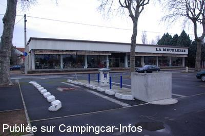
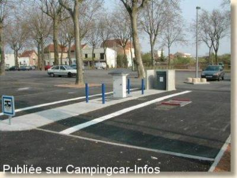

ASN = Aire de services avec stationnement nuit possible de :
MONTLUÇON
(N° 541)
Accès/adresse :
Place de la Fraternité
03100 MONTLUÇON
03100 MONTLUÇON
Latitude : (Nord) 46.35535° Décimaux ou 46° 21′ 19′′
Longitude : (Est) 2.58686° Décimaux ou 2° 35′ 12′′
Tarif : 2015
Stationnement, vidanges gratuits
Eau : 5 € /150 L
Électricité : 2,50 € /10 h
Paiement par carte bancaire
Type de borne : EURO-RELAIS
Services :


Poubelles
Jardin public à proximité avec aire de jeux
Centre Leclerc sur la gauche du jardin public
Autres informations :
Ouvert toute l'année
15 emplacements sur sol goudronné,
éclairés, ombragés, bordés de platanes
Stationnement interdit le jeudi de 6 à 15 H pour le marché, limité 72 H

Le 01/03/2008 par Xtian74

Le 21/02/2003 par Patrick LEPILLER
de
papy 03
le 11/09/2015 :
Bonjour.
2 panneaux fixes parfaitement visibles indiquent "stationnement interdit le jeudi de 6 heures à 15 heures". Il s'agit d'un parking gratuit ouvert à tous, campingcars compris, avec une borne de services
Bonjour.
2 panneaux fixes parfaitement visibles indiquent "stationnement interdit le jeudi de 6 heures à 15 heures". Il s'agit d'un parking gratuit ouvert à tous, campingcars compris, avec une borne de services
de
JBW54110
le 16/06/2015 :
De passage à Montluçon les 10 et 11 juin dernier, j' ai eu la désagréable surprise d' entendre frapper à ma porte le 11 vers 08h0, il m' a été demandé de circuler mon véhicule car c' était jour de marché. Les 5 camping-cars présents sont tous partis, j' ai fait de même. Je n' ai pas remarqué la présence de panneaux indiquant ce marché.
Par ailleurs, cette aire est mal conçue : la trémie de vidange des eaux usées est située au milieu du passage, lui même délimité par des tronçons de bordures de trottoir, ce qui ne laisse aucune marge de manoeuvre. La solution que j' ai adoptée a été de vidanger en premier lieu ma cassette wc puis d' utiliser celle-ci pour les eaux usées afin de ne pas en mettre partout.
Autre petit détail : la propreté laisse à désirer, les poubelles ne doivent être ramassées que les 29 février, c' est à dire pas souvent et cela occasionne des mauvaises odeurs.
De passage à Montluçon les 10 et 11 juin dernier, j' ai eu la désagréable surprise d' entendre frapper à ma porte le 11 vers 08h0, il m' a été demandé de circuler mon véhicule car c' était jour de marché. Les 5 camping-cars présents sont tous partis, j' ai fait de même. Je n' ai pas remarqué la présence de panneaux indiquant ce marché.
Par ailleurs, cette aire est mal conçue : la trémie de vidange des eaux usées est située au milieu du passage, lui même délimité par des tronçons de bordures de trottoir, ce qui ne laisse aucune marge de manoeuvre. La solution que j' ai adoptée a été de vidanger en premier lieu ma cassette wc puis d' utiliser celle-ci pour les eaux usées afin de ne pas en mettre partout.
Autre petit détail : la propreté laisse à désirer, les poubelles ne doivent être ramassées que les 29 février, c' est à dire pas souvent et cela occasionne des mauvaises odeurs.
de
yvon
le 24/04/2015 :
bonjour
passe le 19/04/15 aire pas pratique pour vidange entre et sorti trop dangereuse âpre vidange il y a pas eau pour faire le plein coupe cosse de gelé pas remis je me sui plein a l'office du tourisme aire pas calme pour dormir voiture tourne toute la nuit sur le parking et vélo Motors il y a pas de marquage au sol pour nous je suis déçus pour l'aire
bonjour
passe le 19/04/15 aire pas pratique pour vidange entre et sorti trop dangereuse âpre vidange il y a pas eau pour faire le plein coupe cosse de gelé pas remis je me sui plein a l'office du tourisme aire pas calme pour dormir voiture tourne toute la nuit sur le parking et vélo Motors il y a pas de marquage au sol pour nous je suis déçus pour l'aire
de
Bernard
le 26/10/2013 :
Aire bien située, proche du centre ville, calme. Malheureusement, ce n'est sûrement pas un camping cariste qui l'a conçue : emplacements non marqués au sol et surtout, très difficile d'accès pour vidanger les eaux grises.
Aire bien située, proche du centre ville, calme. Malheureusement, ce n'est sûrement pas un camping cariste qui l'a conçue : emplacements non marqués au sol et surtout, très difficile d'accès pour vidanger les eaux grises.
de
buchere.andre
le 30/09/2011 :
la borne et changée, elle est avec carte 7,50€ les 150 litres d'eau,
cherche ou ca va pas à ce prix c'est de l'eau ferigineuse ou de l'arnaque
on ne va pas me faire paraitre desobligent car pour la mairie il faut se taire
la borne et changée, elle est avec carte 7,50€ les 150 litres d'eau,
cherche ou ca va pas à ce prix c'est de l'eau ferigineuse ou de l'arnaque
on ne va pas me faire paraitre desobligent car pour la mairie il faut se taire
de
didier Mourlon
le 29/04/2009 :
Camping-cariste de Montluçon, je veux préciser qu'il existe une autre aire sur le territoire de la communauté d'agglomération de Montluçon. Elle est située près de l'étang de Sault, sur la commune de Prémilhat (sortie Ouest de Montluçon, Direction Guéret). Elle est particulièrement agréable et très bien aménagée (borne, électricité, lieu agréable). Le supermarché Auchan est situé à 8 ou 900 mètres.
Bienvenue à tous !
Camping-cariste de Montluçon, je veux préciser qu'il existe une autre aire sur le territoire de la communauté d'agglomération de Montluçon. Elle est située près de l'étang de Sault, sur la commune de Prémilhat (sortie Ouest de Montluçon, Direction Guéret). Elle est particulièrement agréable et très bien aménagée (borne, électricité, lieu agréable). Le supermarché Auchan est situé à 8 ou 900 mètres.
Bienvenue à tous !